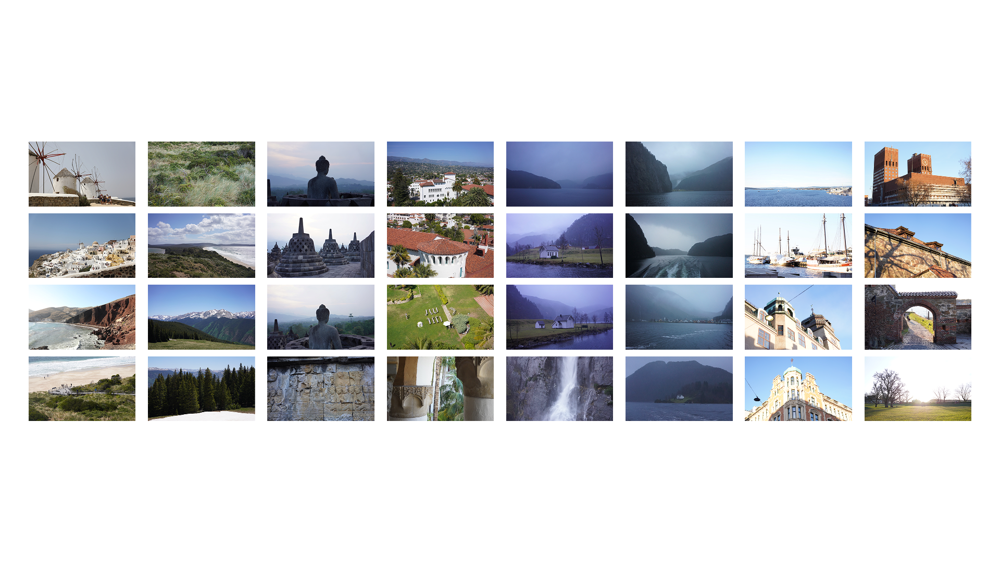
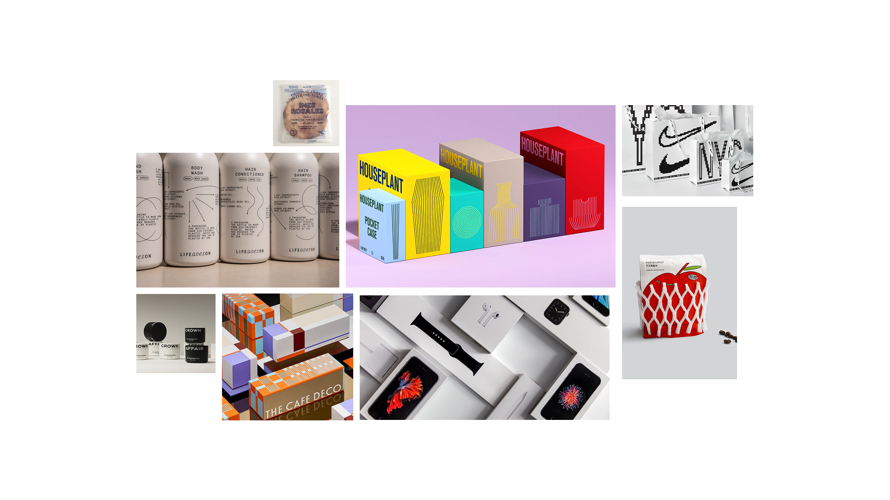
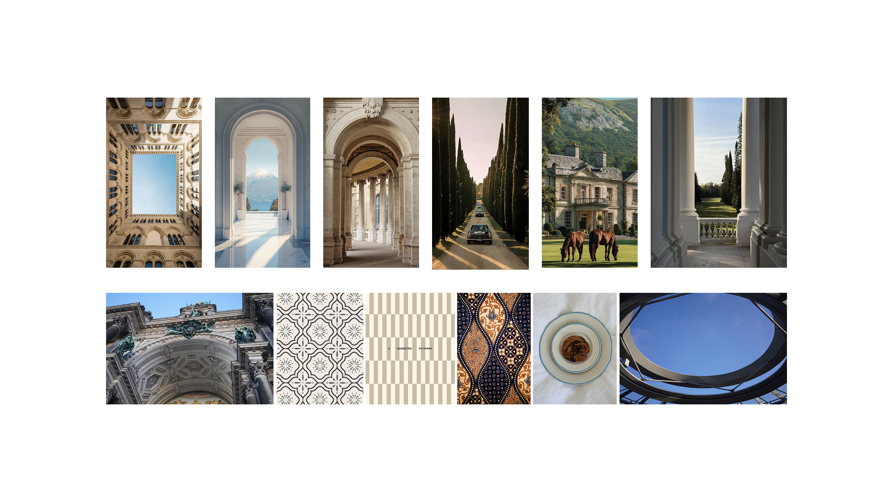
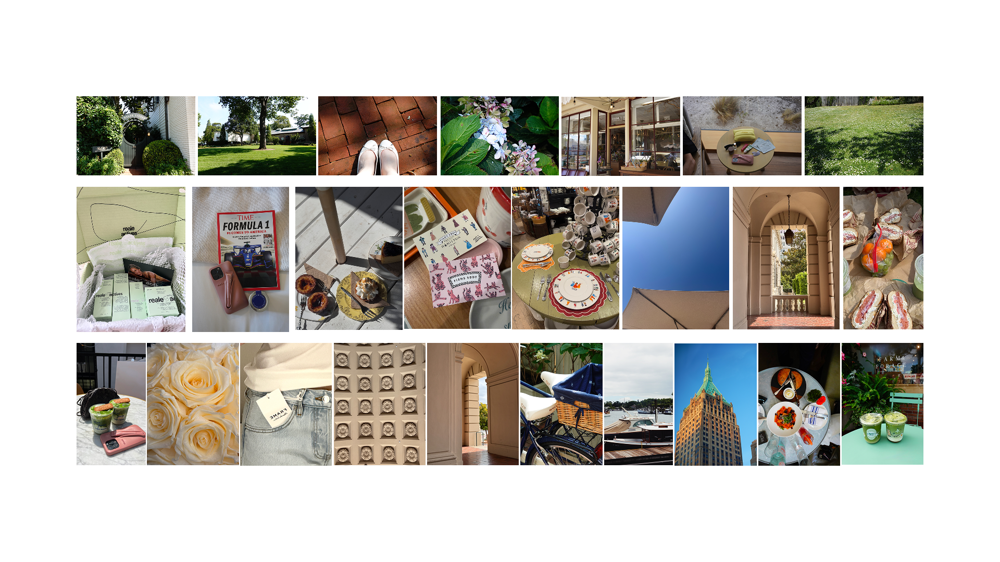

Week 02
256 Project Ideation




Motifs and Patterns in Architecture
Notes
- This direction (Motifs and Patterns) has more potential for 256 and further.
- Look Into: graphic design in architecture, symbolism in architecture within various cultures.
- Potential future directions: machine that generates patterns, etc.